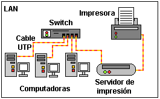

REDES INFORMATICA
¿QUE SON LAS REDES INFORMATICAS?
Las redes informaticas,redes de computadoras o redes de comunicaciones de datos son conjuntos de sistemas informaticos conectados y comunicados entre si, de modo tal que puedan compartir informacion en forma de paquetes de datos.
Estos ultimos se transmiten de una computadora a otra a traves de algun medio fisico, como los impulsos electricos o las ondas electromagneticas.Las redes informaticas permiten la transmision veloz de datos de un sistema a otro y el uso compartido de recursos de hardware y perifericos.
Esto se logra gracias a una serie de estandares de comunicacion conocidos como protocolos, que establece un mismo "idioma" para los distintos procesos de las computadoras en red. En el mundo contemporaneo, las redes informaticas estan muy presentes en la cotidianidad, tanto en el trabajo y la burocracia como en el entretenimiento y la socializacion, pues internet no es mas que una gran red informatica global.
ELEMENTOS DE UNA RED INFORMATICA
Las redes informaticas no son muy distintas en sus elementos de intercambio de otros procesos de comunicacion.Cuentan con un emisor, un receptor y un mensaje, asi como con un medio fisico atraves del cual se transmite ese mensaje y una serie de codigos o protocolos para garantizar su inteligibilidad.Solo que, en este caso, los roles del emisor y receptor son ocupados pr sistemas computarizados que no siempre poseen la misma jerarquia o las mismas funciones.
¿Como funcionan las redes informatica?
El funcionamiento de las redes informaticas se basa en la transmision de paquetes de datos desde una computadora a otra,o desde una computadora a un dispositivo especifico, como pueden ser impresoras, modems, entre otros.Para que ello ocurra, todos los aparatos involucrados deben estar conectados ala red y deben ser capaces de recibir datos atraves de los protocolos pertinentes.
REDES INFORMATICAS SEGUN SUS DIMENSIONES
- Red LAN
- Red MAN
- Red WAN
DEFINICION
- RED LAN
Una Red LAN (Local Area Network o Red de Área Local) es una red de computadoras y dispositivos periféricos que comparten recursos dentro de un área geográfica limitada, como un edificio o una oficina, permitiendo la comunicación e intercambio de datos entre ellos.
- RED MAN
Una Red de Área Metropolitana (MAN, por sus siglas en inglés Metropolitan Area Network) es una red de computadoras que conecta dispositivos en un área geográfica de tamaño intermedio, mayor que una red local (LAN) pero menor que una red de área amplia (WAN), como una ciudad o una región metropolitana.
- RED WAN
Una Red de Área Amplia (WAN, por sus siglas en inglés: Wide Area Network) es una red de computadoras que conecta redes de área local (LAN) u otras redes a través de grandes distancias geográficas, permitiendo la comunicación entre ubicaciones separadas.
Tipos de Topologías de Red:
- Topología en Estrella
- Topología en Bus
- Topología en Anillo
- Topología en Malla
- Topología en Árbol
- Topología Híbrida
DEFINICION
- Topología en Estrella:
Cada dispositivo se conecta a un dispositivo central (hub o switch), facilitando la gestión y detección de fallos, pero con un punto de falla central.
- Topología en Bus:
Todos los dispositivos se conectan a un cable común (bus), simple y económica, pero con problemas de congestión y problemas de transmisión si el cable falla.
- Topología en Anillo:
Los dispositivos se conectan en un circuito cerrado, con datos pasando de un dispositivo a otro, lo cual es eficiente en redes pequeñas, pero con problemas de escalabilidad y fallo de un solo dispositivo.
- Topología en Malla:
Cada dispositivo se conecta a todos los demás, lo cual es muy resistente a fallos y proporciona alta redundancia, pero es costosa y compleja de implementar.
- Topología en Árbol:
Combina elementos de las topologías en estrella y en bus, con una estructura jerárquica que permite la escalabilidad.
- Topología Híbrida:
Combina diferentes tipos de topologías para optimizar las características de la red.
